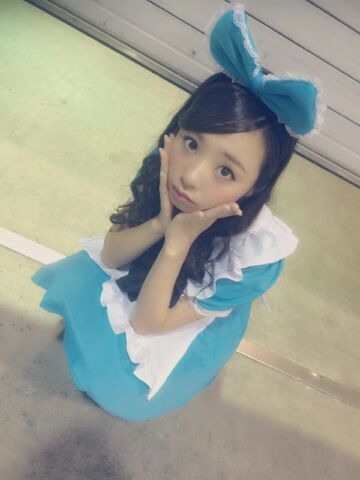
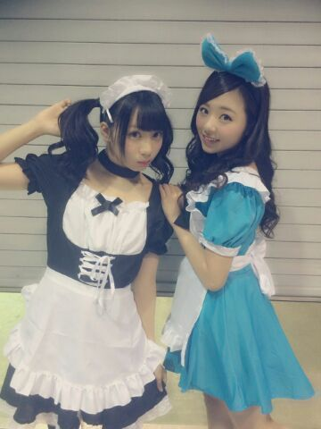
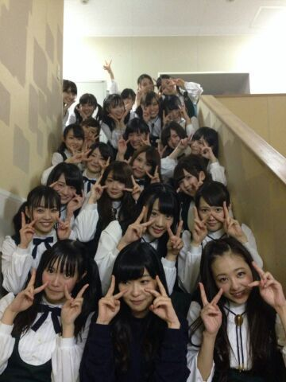

| 2014/10 21 Tue | 〜アンダーライブ終わって最初の blog〜 寧々の卒業。 |
ろってぃー or まにだよ ..*
久しぶりやね.やっと落ち着きました〜(´；ω；｀)
これは 土曜日にあった握手会です..*

ハロウィンとゆうことで、アリスに仮装してみました..*どうですかぁ？似合ってますかぁ？
正直 皆さんの前に出る時 めっちゃ恥ずかしかったんですけど、「ろってぃ-超可愛え〜」って言ってくれるので嬉しくなりました. ありがとう＼(*´`*)／
そして あみ、 20歳おめでとう ！！！
あみには チームDから一人ずつ御手紙を渡しました。

＿＿＿＿＿＿＿＿＿＿＿＿＿＿＿＿
《 話変わります。》
〜セカンドシーズン〜アンダーライブ ！！！！！
全 18公演が終了致しました＼(^-^)／
皆お疲れ様でした..*
そして、ファンの皆様、スタッフの皆様、メンバーの皆、ありがとうございました。
たくさんの業界の方も見に来てくださいました。
田中将大投手/指原さん/松井れなさん/イジリーさん/芸人のクロちゃん等...
ひめか推しの桜井さんも普通に客席で楽しんでくださっていて嬉しかったです。
こうやって乃木坂のアンダーライブがたくさんの方に知ってもらえている. とゆうことが本当に嬉しいです。
liveが終わった後、
指原さんの方から私に話かけてくださったり
れなさんに呼ばれ 誉め言葉とアドバイスをくださったり
イジリーさんが「やっぱりまひろちゃんは違うね！ 」って誉めてくださったり、、、
クロちゃんに「あ〜 クロちゃんや〜」って言ったら「クロちゃんです＼(^^)／ なんでだよう！ 合ってるけど！」
って言ってもらえたり、、、笑 けけけ。
さゆりが 今回のアンダーライブのMVPはろってぃーだと思う。って言ってくれたり、、、
本当に嬉しかったです。。。
でも、
今回のライブを通して、自分の反省点・直して行かなきゃいけないことも見つかりましたし、まだまだ足りないところがたくさんあると思います。
色々大変だったけど、やって良かったな。って思います\(*´`*)/
制服のマネキンでは 私がセンターをやらせて頂くこともあり、 それを楽しみに来てくださる方も居て本当嬉しかったです。
生駒がアンダーライブに見に来た後日に仕事で「制服のマネキン」を踊る時があったみたいなんですけど、
『 ろってぃーみたいに踊ろうと思ったけど、踊れなかった〜』って ニコニコしながら言ってきたのは可愛かったです。はい*^^*
そして今回 《1人MC》とゆうコーナーがありまして、まあ単純に 3分間のMCタイムをたった1人でやる。とゆう企画なんですけど、、、
ろってぃーは 初日でした〜〜＼(^o^)／
3分ってあっという間すぎて、、、もっとやりたかった〜って位楽しかったです

「ろってぃーのダンス&レスポンス〜♪」とか言って、音楽に合わせて皆で二の腕体操をしたり、、
かなりんが走れ!Bicycleを踊ったらどうなるか？ってことで、 かなのダンスモノマネをやったりだとか、、、
その時来てた皆様、笑ってくれてありがとう。ははは 笑

そして最後に ねね。。。
ねねが今回のライブをもって卒業しました。
ねねには最後帰るときに 手紙を渡しました。
ねねは 同い歳でずっと信頼し合える中でした。
TVやblog等では 特別ねねと仲良しってのは出してこなかったけど、
乃木坂に入ってすぐに、それまひろに話して大丈夫なんかな？ってことを話してくれたので『あっ この子はまひろのこと信用してくれてんだ。』って思って まひろもねねに正直に色々話してきました^^
地方に行って二人部屋のホテルに泊まる時は「まひろとがいい。」って言ってくれたりして、←しかもこれ直接じゃなく 人伝えやからより嬉しかった*^^*
ねねは 本当に皆に愛されていたよ。
ねねは本当に大人だし優しいし、何しても笑ってくれるし、顔も好きだし、大好きでした！
ねね３年間ありがとう！
でもあれだよ、卒業してもたまにまひろと会ってご飯に行こうね
 へへ
へへ
じゃあまたね、ねね。
皆も最後まで読んでくれてありがとう。
何か書きたいことが色々あって うまくまとまってないかもだけど、、、
また更新するね。 のし
コメント(307)
2014/10/21 23:48